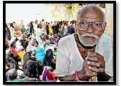
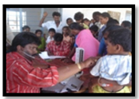
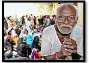
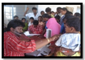

WHAT WE DO
FREE MEDICAL SERVICES
VLCT & RC is dedicated in providing free medical services in and around Nellore District to the underprivileged and weaker sections of the society. VLCT & RC takes pride to mention that our Trust have conducted many Thousands of FREE MEDICAL CAMPS, and this has reached and benefitted many lakhs of people in and around Nellore district and our Trust's commitment from the past 2 decades have made it possible to provide Super Specialty medical services at free of cost to the needy without any discrimination of caste and creed, with the support of well trained and highly skilled professionals. We still emphasizes on improving ourselves to provide more and more free medical services for the poor and the needy for the future and create a sense of belief among the Needy that VLCT & RC is always among us to nurture and take care of them.
EMERGENCY AND DISASTER MANAGEMENT SERVICES
"First Aid is the prime thing to save a life"
Nellore being one of the largest coastal belts in India situated very near to the Bay of Bengal always prone to tsunami, other natural calamities. Frequently accidents occur on the NH-5 due to mass rapid transport system.. VLCT & RC is dedicated and committed in providing emergency services in and around Nellore, and to mention we are the first to launch the Mobile ICU in Nellore District running successful from the past 2 decades. Our trust responds quickly and appropriately to various kinds of train accidents and natural calamities to rescue the victims in time and provide free medical services to the affected.
FREE VACCINATION SERVICES
"Prevention is better than cure"
Vaccination is a biological preparation that improves immunity to a particular disease, VLCT & RC was committed to vaccinate the poor children at free of cost on various kinds of serious situations like JE epidemic, and provide free vaccination to other dreadful diseases like Measles, Polio, Hepatitis-B. VLCT & RC believes that Children are the pillars for any nations hence these children should not be deprived of the basic medical facilities. Hence VLCT & RC has conducted many number of Free Vaccinations camps and saved many 1000's of children in and around Nellore District.
FREE EYE SCREENING PROGRAMMES
"Providing vision to the nation"
VLCT & RC was committed to provide light to the poor and the needy, rate of eye problems are very high in and around Nellore. Main intension of the camps is to diagnose early vision defects. Hence our Trust have conducted so many eye camps and provided free medical services. These camps were mainly targeted on school children and old age people in the rural areas where in some 1000's of children and old age people were benefitted. Vitamin-A drops were given to small children to prevent blindness
FREE MEDICINES AND NUTRITION DISTRIBUTION
"Reaching the unreached and unserved"
Base Line survey was conducted by VLCT & RC among the poor and needy and indentified most of the children were suffering from anaemia and malnutrition problems which are an alarming situation to be focused.
VLCT & RC has conducted many number of free medicine distribution camps to provide necessary vitamins, and medicines to more than 2 lakhs children who were clinically screened by professionals and provided with appropriate medicines.
FREE HEALTH SCREENING PROGRAMMES
"Identification at early stage for better treatment"
VLCT & RC has made Benchmark decisions to bring in the accurate and exact changes in the lives of the poor and the needy. In order to maintain this Trust have conducted many free health screening programs which are also necessary along with the free medical camps.
Our Trust has used advanced kind of technical instruments with the support of Skilled and well trained staff to discover and investigate the problems of the people in scientific manner. Many people have utilized these services and were benefitted through proper diagnosis.
FREE MEDICAL SERVICES FOR RURAL POOR
"Healthy rural communities for healthier nation"
VLCT & RChas arranged Regular FREE RURAL MEDICAL Camps, to identify communicable diseases and chronic diseases which play major roles in the rural areas.
Our Trust is committed to provide and give proper sanitation tips to improve their village and create healthy atmosphere for the future generations. These programs are mainly aimed at identifying malnutrition, vitamin deficiency, and free medicines were delivered to the appropriate communities, mainly SC, ST and backward communities.
FREE COMPREHENSIVE MEDICAL SERVICES FOR SC/ST/BC HOSTEL CHILDREN
"Creating powerful youth for the nation"
Our Trust believes that students are the power for nation. Most of the students residing in the hostel are suffering from various kinds of illness affecting the society directly and indirectly due to lack of proper support..
Our Trust conducted many kinds of free medical camps and thoroughly screened and identified causes for the illness and provided proper medical treatment. We conducted these camps at the Government SC, ST & BC hostels in and around Nellore and screened many 1000???s of students..
FREE MEDICAL SERVICES FOR URBAN SLUMS
"Building hygiene and healthy areas"
 


VLCT & RC was committed and provides support in building somewhat hygiene and healthy slums situated around us. FREE MEDICAL Camps were conducted at the slum areas to identify communicable diseases and to diagnose chronic diseases...
Our Trust conducted many kinds of free medical camps and thoroughly screened and identified causes for the illness and provided proper medical treatment. We conducted these camps at the Government SC, ST & BC hostels in and around Nellore and screened many 1000???s of students..
FREE MEGA SUPER SPECIALITY MEDICAL CAMPS
"Provide corporate medical benefits to all"
VLCT & RCVLCT & RC believes in providing qualitative, expensive and costly medical services at free of cost to the poor and needy at their doorsteps by conducting FREE MEGA SUPER SPECIALITY MEDICAL CAMPS. Along with free super specialty consultations free medication we also provide diagnostic services like E.E.G, E.C.G, ultrasound scans etc,
These camps are targeted to provide free services which cannot be afforded by the weaker sections; hence our trust has conducted many FREE MEGA SUPER SPECIALITY MEDICAL CAMPS to identify many children suffering from various diseases and provide free medical services and many 1000's of children and peoples were benefitted by these free medical camps.
FREE COUNSELING AND AWARENESS PROGRAMMES ON HEALTH EDUCATION
"Enhancing the lives of rural areas"
Nellore district comprising of 46 Mandals have a diverse range of geographical situations where the major part of the district falls under rural population with less literacy rate. Considering this situation VLCT & RC is committed and dedicated for the upliftment of the poor and the weaker section through various kinds of activities like awareness program
Our Trust believes Ignorance is the main cause for so many diseases and disabilities and discriminations in the society. Awareness is the only remedy for all, to educate the poor people the trust conducted many 1000's of awareness programs on health, hygiene, and sanitation and reduce the health problems in the society and create a healthy society for the nation.